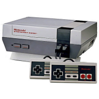
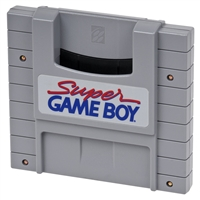
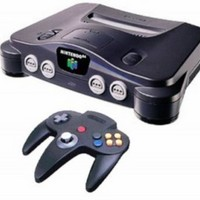
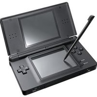
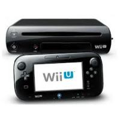

J&C
J&C
 J&C
J&C

The worldwide pioneer in the creation of interactive entertainment, Nintendo Co., Ltd., of Kyoto, Japan, manufactures and markets hardware and software for its Wii U™ and Wii™ home consoles, Nintendo 3DS™ and Nintendo DS™ family of portable systems. Since 1983, when it launched the Nintendo Entertainment System™, Nintendo has sold more than 4.3 billion video games and more than 680 million hardware units globally, including the current-generation Wii U, Wii, Nintendo 3DS, Nintendo DS, Nintendo DSi™ and Nintendo DSi XL™, as well as the Game Boy™, Game Boy Advance™, Super NES™, Nintendo 64™ and Nintendo GameCube™ systems. It has also created industry icons that have become well-known, household names such as Mario™, Donkey Kong™, Metroid™, Zelda™ and Pokémon™. A wholly owned subsidiary, Nintendo of Europe, based in Frankfurt am Main, Germany, was established in 1990 and serves as headquarters for Nintendo's operations in Europe.
The company created a wholly owned subsidiary, Nintendo of America Inc. in New York. Nintendo began selling the "GAME & WATCH" product line in Japan, the first portable LCD videogames with a microprocessor.Nintendo artist Shigeru Miyamoto created the game Donkey Kong. The hero, originally called Jumpman, is a carpenter racing to save his girlfriend, Pauline, from a crazed ape. Jumpman was later renamed during the establishment of Nintendo of America's headquarters by Nintendo Co., Ltd. In honour of Jumpman's resemblance to their office landlord, Mario Segali, he was later renamed 'Mario'.
Nintendo developed and started selling the unique, twin-screen interactive coin-operated videogame "VS. System". At the same time, the company launched the Famicom system in Japan, later renamed Nintendo Entertainment System (NES) when it launched worldwide. Stellar software titles were developed one after another, from Excitebike, Super Mario Bros. and Metroid to The Legend of Zelda and Punch-Out! From these titles, it was Super Mario Bros. that quickly became a smash hit around the world. Studies at the time showed that children were as or more familiar with Mario as they were with Mickey Mouse and Bugs Bunny.

The Nintendo Entertainment System was launched in Europe and instantly became a major hit and a must-have in homes across the continent. Nintendo developed and began selling the "Family Computer Disk Drive System" in Japan to expand the functions of the Famicom. Also in Japan, the company began installation of the "Disk Writer" to rewrite game software.
Japan entered the 16-bit market by releasing the Super Famicom in the autumn. Game Boy was launched in Europe and established what would become an astronomical worldwide installed base for the Nintendo handheld console. In June, Nintendo of Europe was set up as a wholly owned subsidiary of Nintendo, based in Grossostheim, Germany.
The Super Nintendo Entertainment System (Super Famicom) was launched in Europe in June. The console went on to sell more than 46 million units worldwide. Japan saw the release of the Super NES Super Scope and Mario Paint with the Super NES Mouse Accessory. The long-awaited Zelda sequel, The Legend of Zelda: A Link to the Past, also arrived for the Super NES.
The Super FX Chip was announced: a breakthrough technology for home video systems. The first game using the Super FX Chip, Star Wing, was released in April. Nintendo of the Netherlands was established and Nintendo products, which had previously been distributed and managed by Bandai in the Netherlands, were handed over. Other subsidiaries were also established in France, UK, Spain, Belgium and Australia.

The Super Game Boy accessory was released, expanding the library of games that could now be played on the Super NES. Nintendo helped pioneer the development and implementation of an industry-wide rating system in the United States. This year also saw the introduction of a game that would set a new standard in video game excellence - using proprietary Advanced Computer Modeling (ACM) graphics, Donkey Kong Country took the US holiday season by storm. The Nintendo Gateway was launched, putting Super Nintendo units and a selection of SNES games into commercial planes for the enjoyment of passengers.

Nintendo 64 launched in Japan on 23 June. Thousands lined up to be the first to experience the world's first 64-bit home videogame system. More than 500,000 systems were sold on the first day. Another system launch occurred in early September when Nintendo introduced the Game Boy Pocket, a sleeker, 30-percent-smaller version of the world's most popular handheld. Super Mario 64 was proclaimed by many as "the greatest video game of all time." Meanwhile, the Super NES saw the release of the third game in the continuing Donkey Kong series, Donkey Kong Country 3: Dixie Kong's Double Trouble. Pokémon, a new gaming phenomenon on the Game Boy, was released in Japan on 26 February.
Nintendo released Pokémon throughout Europe on 8 October. Nintendo expanded the library of high-quality software with innovative titles such as Pokémon Snap and Pokémon Pinball, the latter including a built-in rumble feature. Hits such as Mario Golf, Donkey Kong 64 and Perfect Dark were launched. Also, during the summer, the range of Game Boy Color coloured casings expanded with red, green, yellow and blue added to the collection. Nintendo first announced plans for a new system utilising an IBM Gekko Processor and Matsushita's Unique DVD Technology.

The Nintendo Game Boy became the most popular selling console ever as sales surpassed 100 million. Meanwhile, the Pokémon franchise continued to be a worldwide phenomenon, and Nintendo celebrated its success with a limited edition release of Pikachu Nintendo 64. The N64 expanded its library of classics with hits such as The Legend of Zelda: Majora's Mask, Ridge Racer 64 and Mario Tennis. The Nintendo of the Netherlands office became responsible for both Belgium and the Netherlands market and changed its name to Nintendo Benelux. Meanwhile, the headquarters of Nintendo Co., Ltd were relocated to Minami ward of Kyoto, Japan.

January saw the worldwide announcement of Nintendo's ‘mystery system’: the Nintendo DS, a dual-screened handheld with Touch Screen technology. In the autumn, Pokémon FireRed and LeafGreen are launched for Game Boy Advance, continuing the success of the Pokémon phenomenon. 2004 also saw the arrival of many different special editions of the Game Boy Advance: Tribal Edition (June), Classic NES Edition (July), Limited Pink Edition (October), Zelda Limited Edition (November) and Mario Limited Edition (November) were all released across Europe. Toward the end of the year, the Nintendo DS was released in the US and Japan to immediate success. The new dual-screened system also featured wireless multiplayer, Touch Screen technology and backward compatibility with Game Boy Advance titles.
In 2006, Nintendo DS rose to the top of the gaming world as the most popular portable console, thanks to games suitable for everyone. Players all over Europe made Animal Crossing: Wild World, New Super Mario Bros and Metroid Prime Hunters best-sellers. Nintendogs ushered in the Touch! Generations brand of games, a range of titles that let people play like never before. Dr Kawashima's Brain Training - the top Touch! Generations title - became a huge hit even among people who never played before. Nintendo DS renewed its look in June with the Nintendo DS Lite, which features brighter screens along with its slim design. The year ended with the launch of Wii. The new home console with its innovative control system found an audience with both Nintendo fans and those who don't traditionally play videogames. The console's success is bolstered by titles such as Wii Sports and the newest episode in the Zelda series, The Legend of Zelda: Twilight Princess. Prior to the launch of Wii, Nintendo President Satoru Iwata conducted a series of internal interviews with Nintendo staff as well as external developers providing an in-depth look behind the scenes of the company and the process of bringing new hardware and software to market. The “Iwata Asks” series of interviews would be continued in years to come, often candidly revealing information about the inner workings of the company, both past and present.

2012 was a landmark year for Nintendo, seeing the launch of a new home console, Wii U, and also a new handheld system, Nintendo 3DS XL. The Last Story, an epic RPG from the creator of Final Fantasy, launched on Wii in February. The first European Nintendo Direct was also broadcast, connecting Nintendo with its fans to deliver news directly. In March, Mario Party 9 and PokéPark 2: Wonders Beyond entertained Wii owners, while Pit burst back into the limelight on Nintendo 3DS in Kid Icarus: Uprising, the first title in the Kid Icarus series in over 20 years.Nintendo 3DS XL, a new handheld system featuring the largest screens yet found in a Nintendo portable console, was released in July. The summer also saw varied titles launch in succession: the zany music action of Beat the Beat: Rhythm Paradise on Wii, the strategic Pokémon Conquest, and New Art Academy, which continued to teach players a range of artistic skills. August rounded out with the launch of New Super Mario Bros. 2, which challenged players to reach a whopping one million gold coins. October saw the launch of some fan-favourite portable offerings as Pokémon White Version 2 and Pokémon Black Version 2 arrived on Nintendo DS, while the puzzle professor returned in Professor Layton and the Miracle Mask on Nintendo 3DS. November 2012 heralded the launch of a new Nintendo home console: Wii U. Nintendo’s first high definition home console boasted dual screen gaming thanks to the Wii U GamePad’s built-in screen, which opened up new gameplay possibilities and ways to interact in the home. Wii U was backed up by a strong software line-up at launch, including New Super Mario Bros. U and Nintendo Land, introducing new ways for friends and families to play together.
Nintendo continued to provide unique experiences to players around the world in 2014, launching engaging software throughout the year to cater for players of all tastes and skill levels.Mario Party: Island Tour’s January launch put a portable party in the hands of Nintendo 3DS and 2DS players, while February showcased the breadth of Nintendo’s software offerings. There was underwater strategy in Steel Diver: Sub Wars, over-the-top football action in Inazuma Eleven 3: Team Ogre Attacks!, and the return of a gaming icon in Donkey Kong Country: Tropical Freeze on Wii U. More of Nintendo’s big names continued to come out in force, with Yoshi’s New Island, Professor Layton vs. Phoenix Wright: Ace Attorney, Mario Golf: World Tour and Kirby: Triple Deluxe all hitting Nintendo 3DS in the first half of the year. Wii U owners were similarly spoilt for choice, with the launch of Game Boy Advance games on Wii U Virtual Console in April, and the much-anticipated May release of Mario Kart 8. The first high-definition entry in the popular kart racing series launched to strong review scores, and sold over 1.2 million copies worldwide in its first weekend. Things continued to heat up in June. Tomodachi Life for Nintendo 3DS and 2DS gave players a quirky world of Mii characters to enjoy, and Nintendo revealed brand new games and experiences in its Digital Event at the Electronic Entertainment Expo. Among the announcements was amiibo, a new range of figures of Nintendo characters that can interact with supported software, such as Super Smash Bros. for Wii U.